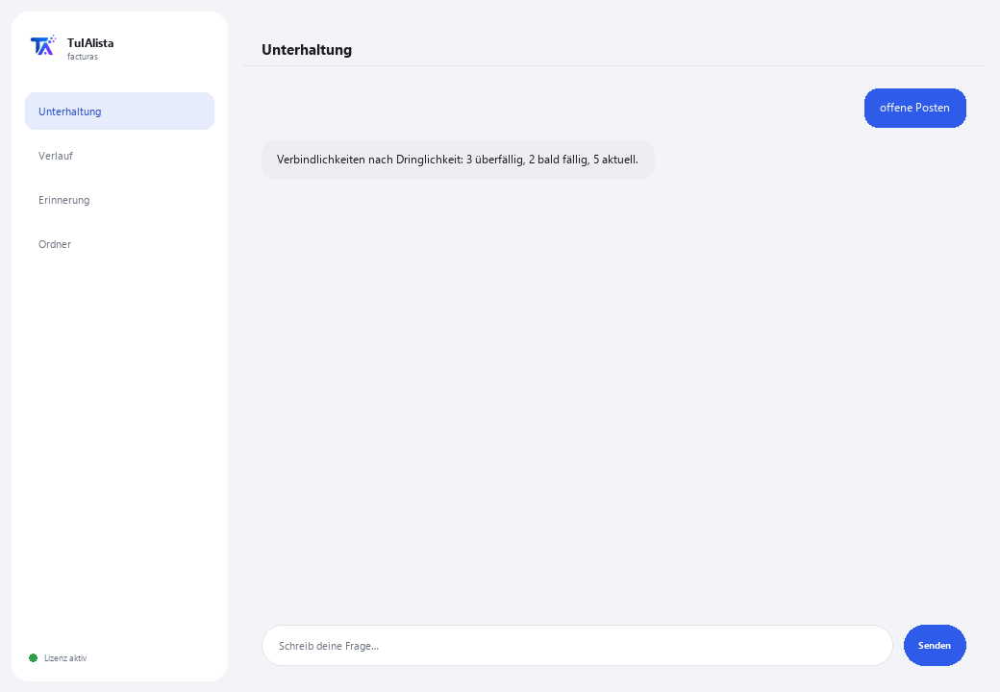

Agent für Rechnungen und Verbindlichkeiten
Sagen Sie ihm mit eigenen Worten, was Sie brauchen, und er erstellt die Rechnungs-Excel-Tabelle, die Steuerübersicht und die Verbindlichkeiten — ohne dass Sie etwas von Hand eingeben.
Was löst er und was brauchen Sie?
Rechnungen von Hand in Excel einzugeben dauert Stunden, und leicht zahlt man dieselbe doppelt oder verpasst ein Fälligkeitsdatum. Dieser Agent liest Ihre CFDI-XML-Dateien und Rechnungs-PDFs und erstellt die Erfassungstabelle, die Steuerübersicht und die Verbindlichkeiten — Sie schreiben ihm, was Sie brauchen, wie einer Person, keine exakten Befehle.
- Sie brauchen: Ihren Lizenzschlüssel (TIA-XXXX-XXXX-XXXX-XXXX) und den Ordner mit Ihren Rechnungen (CFDI-XML und/oder PDF). Kein Python, keine technischen Kenntnisse.
- Erstes Ergebnis in weniger als 5 Minuten: Sie installieren, aktivieren, wählen Ihren Ordner und schreiben exportieren, damit er die vollständige Excel-Tabelle erstellt.
- Ihre Rechnungen verlassen nie Ihren Computer — die Analyse läuft lokal.
soporte@tuialista.com oder besuche tuialista.com/soporte — wir antworten normalerweise am selben Werktag.1 Was dieser Agent tut
Sie zeigen ihm den Ordner mit Ihren Rechnungen (CFDI-XML vom SAT und/oder PDF) und er:
- Erfasst jede Rechnung in einer geordneten Excel-Tabelle — was normalerweise stundenlang von Hand gemacht wird: Belegnummer, Lieferant, Steuernummer, Daten, Zwischensumme, Umsatzsteuer, Einbehalt, Gesamtsumme und Währung.
- Fasst die Steuern des Zeitraums zusammen, indem er addiert, was jede Rechnung pro Währung angibt (Basis, Steuer, Einbehalt, Summe).
- Erstellt Ihre Verbindlichkeiten mit Warnungen darüber, was fällig ist und was bald fällig wird.
- Erkennt doppelte Rechnungen.
- Beantwortet jede Frage oder Anfrage zu Ihrem Rechnungsbestand in Ihren eigenen Worten — keine Befehle zum Auswendiglernen.
Die Erfassungs- und Berechnungsarbeit folgt festen, bereits getesteten Regeln, auf Ihrem Computer (verwendet keine KI, irrt sich nicht durch Erfindung): Er liest die CFDI-XML exakt und jede PDF-Rechnung durch Textlesen. Ergebnis: Sie zahlen pünktlich, ohne Duplikate, mit Ihrer fertigen Rechnungs-Excel-Tabelle, ohne sie selbst zu erfassen.
2 Installation (2 Minuten)
Für Windows. Keine dauerhafte Internetverbindung nötig, nichts wird in die Cloud hochgeladen.
Laden Sie das Installationsprogramm von tuialista.com/descargar herunter (Rechnungsagent) und öffnen Sie es. Es erstellt eine Verknüpfung mit dem Logo auf Ihrem Desktop — kein Python oder Terminal erforderlich.
Doppelklicken Sie auf das neue Symbol. Fügen Sie Ihren Lizenzschlüssel ein (er wurde Ihnen beim Kauf per E-Mail zugesandt) und klicken Sie auf Aktivieren. Sie sehen ein grünes Häkchen, wenn er gültig ist.
Wählen Sie den Ordner mit Ihren Rechnungen aus und klicken Sie auf Agent jetzt verwenden. Beim nächsten Mal startet er direkt — er merkt sich Ihren Schlüssel und Ihren Ordner.
3 So verwenden Sie ihn
Der Agent öffnet ein Chat-Fenster, wie eine Messaging-App — kein schwarzer Programmierer-Bildschirm. Keine exakten Befehle zum Auswendiglernen: Sie schreiben ihm, was Sie brauchen, fast wie Sie es einer Person sagen würden, klicken auf Senden (oder Enter), und er erledigt die Arbeit. Das sind die 4 Hauptaufgaben, mit Beispielen, wie man danach fragt:

> exportieren / Excel erstellen / erfassenErstellt eine Excel-Tabelle mit allem: Erfassung jeder Rechnung, Steuerübersicht und Verbindlichkeiten, fertig zum Öffnen.
> Steuern / wie viel UmsatzsteuerSteuerübersicht des Zeitraums: Basis, Steuer, Einbehalt und Summe, addiert pro Währung.
> offene Posten / was fällig ist / wie viel ich schuldeIhre Verbindlichkeiten, das Dringendste zuerst: überfällig, bald fällig und aktuell, mit Lieferant und Betrag.
> Duplikate / wiederholte RechnungenErkennt Rechnungen, die scheinbar zweimal geladen wurden (gleiche Belegnummer/UUID oder gleicher Lieferant und Summe).
> jede andere FrageZ. B.: “wie viel schulde ich ACME”, “Summe pro Lieferant”, “vergleiche diesen Monat mit dem vorherigen” — der Agent versteht die Anfrage und erstellt die Antwort oder den Bericht.
Möchten Sie die 20 vollständigen Rezepte mit einem echten Beispiel für jedes sehen? Sehen Sie sich den Rezeptkatalog an — ein eigenes Dokument wegen seiner Länge: catalogo_recetas.pdf neben diesem Handbuch, oder die interaktive Version unter tuialista.com/guia/facturas/recetas.
4 Beispiele für häufige Anwendungen
Die vollständige Excel-Tabelle des Monats erstellen
“exportieren” — Sie erhalten eine Excel-Tabelle mit Erfassung, Steuern und Verbindlichkeiten, fertig zur Prüfung oder zum Versand an Ihren Steuerberater.
Wöchentliche Zahlungsprüfung
“offene Posten” → “Duplikate”
Monatlicher Steuerabschluss
“Steuern des Zeitraums”
Eine punktuelle Abfrage
“wie viel schulde ich ACME diesen Monat?”
5 Häufig gestellte Fragen
Werden meine Rechnungen ins Internet hochgeladen?
Welche Formate akzeptiert er?
Muss ich den exakten Befehl schreiben?
Erkennt er Duplikate zuverlässig?
Führt er Zahlungen aus?
In welcher Sprache antwortet er?
Liest er ein gescanntes PDF?
Verändert er meine Originalrechnungen?
Kann ich den Ordner ändern?
Was ist der “sichere Modus”?
6 Problemlösung
Eine Datei wird nicht gelesen
Zeigt an, dass keine Rechnungen gefunden wurden
Eine Rechnungsangabe wird nicht richtig erkannt
Zeigt “Lizenz ungültig” oder fordert erneute Verbindung
Die KI antwortet nicht auf eine freie Frage
Keine dieser Lösungen hat Ihr Problem behoben? Schreiben Sie uns direkt — wir schauen es uns gerne gemeinsam mit Ihnen an.
soporte@tuialista.com oder besuche tuialista.com/soporte — wir antworten normalerweise am selben Werktag.7 Datenschutz und Vertraulichkeit
Ihre Rechnungen verlassen nie Ihren Computer.
- Der Agent liest und verarbeitet die Rechnungen lokal, auf Ihrem eigenen Gerät. Er lädt sie auf keinen Server hoch.
- Die Excel-Erfassung, die Steuerübersicht, die Verbindlichkeiten und die Duplikate werden auf Ihrem Gerät berechnet, mit festen, bereits getesteten Regeln (ohne KI).
- Das Einzige, was über das Internet läuft, ist: (1) eine Überprüfung, dass Ihre Lizenz aktiv ist — die Ihre Rechnungen nicht enthält —, und (2) wenn Sie etwas anfragen, das keine der 4 Hauptaktionen ist (eine freie Frage), wird ein Ausschnitt der relevanten Information an die KI-Engine gesendet, um antworten zu können.